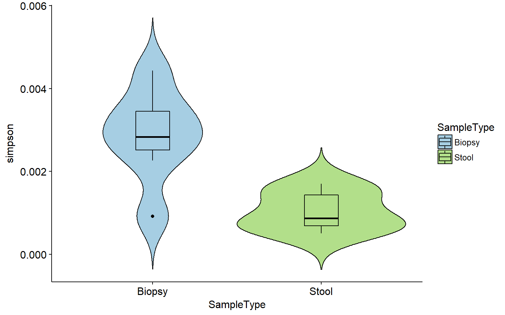
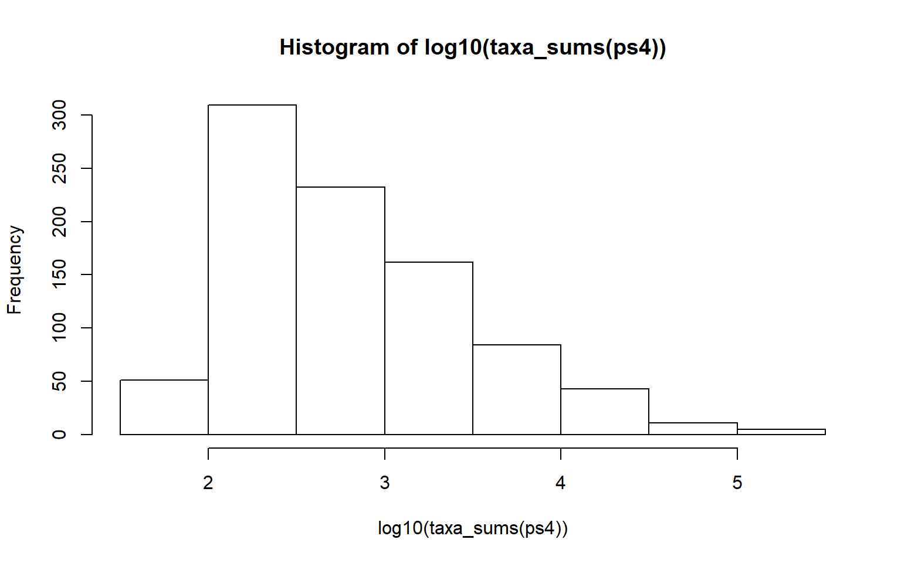
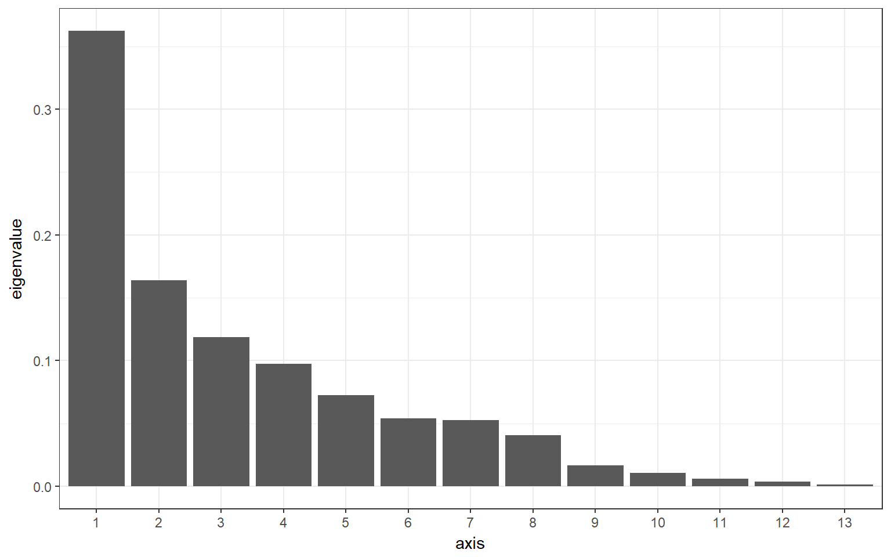
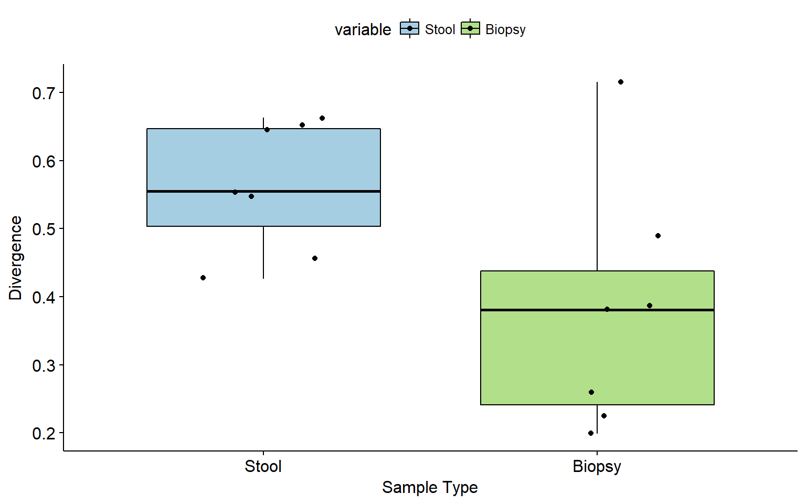
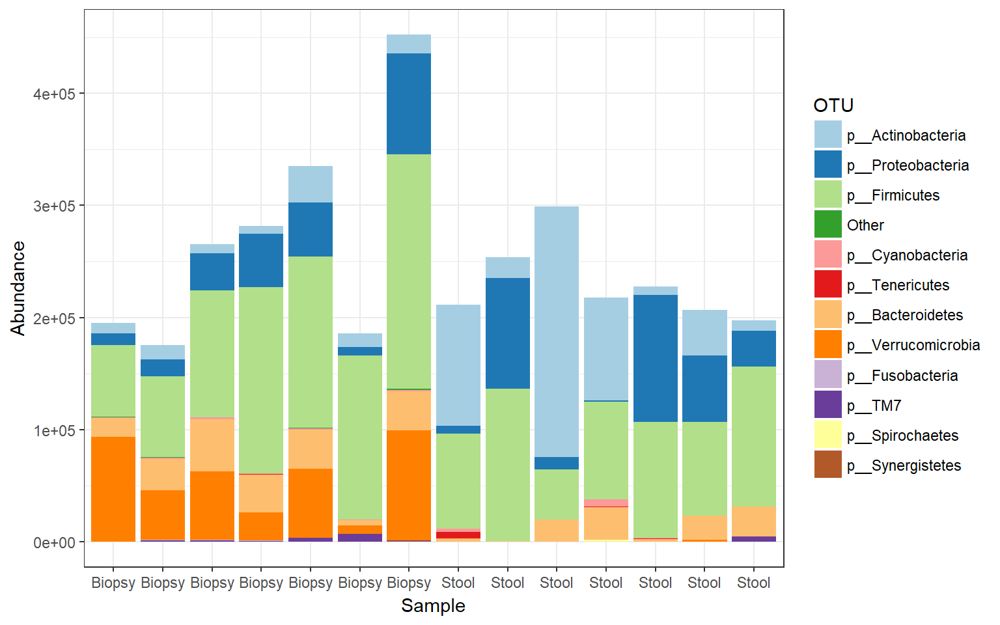
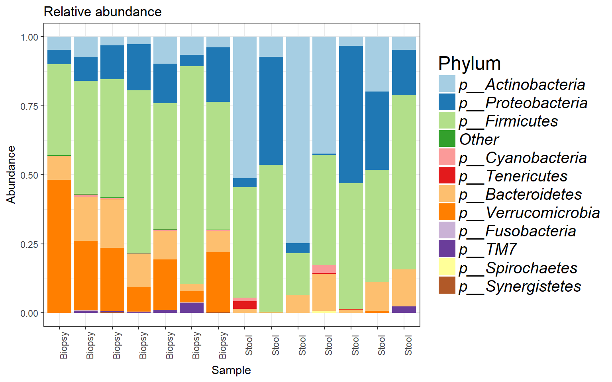

Microbiota anlaysis tutorial example
This tutorial gets you started with basic R tools for microbial ecology using an example data. In particular the aim is to provide an introduction to basic data handling, analysis and visulisation of marker gene amplicon sequencing data.
This is a supporting website for the main project:
Tools for microbiome analysis in R. Microbiome package version 1.1.2. URL: http://microbiome.github.com/microbiome.
Installation
Launch R/RStudio and install the microbiome R package see (installation instructions).
For instructions on how to load different file formats into R see import data.
Example data
A subset of human intestinal biopsy and faecal data from pre-print Shetty SA et al. 2017.
This is a simplified version of various methods available these days to microbial ecologists. The ideology of putting all of this together is to share the information and also clarify the ‘ease’(you see we didn’t say ‘simple’) of using R-software and related packages. The analyses shown here are basic and aimed mostly at introducing the reader to commonly used packages, scripts and data analysis methods. Descision making related to different parameters will still be soley upon the user.
For more information you can have a look at Phyloseq and here.
Important Note 1:
Wisdom1 - There is no substitute for careful reading, so read the tutorial first and then start playing with it.
Wisdom2 - Never skip a step or piece of text, you might need a file that was generated previously. Take your time and don’t rush.
Kindly cite all the packages/tools that you have used in your analysis.
Load the libraries
library(microbiome)
library(knitr)
library(ggpubr)
library(reshape2)
library(RColorBrewer)
library(microbiomeutilities)
library(viridis)
library(tibble)data("biogeogut")
#save(biogeogut, file = "./inputdata/biogeogut.rda")
#load("./inputdata/biogeogut.rda")
ps1 <- biogeogutPre-processing and QC
# check the data
print(ps1)## phyloseq-class experiment-level object
## otu_table() OTU Table: [ 19063 taxa and 14 samples ]
## sample_data() Sample Data: [ 14 samples by 6 sample variables ]
## tax_table() Taxonomy Table: [ 19063 taxa by 7 taxonomic ranks ]# check if any OTUs are not present in any samples
any(taxa_sums(ps1) == 0)## [1] TRUEThe answer is TRUE. Yes, there are OTUs not found in any samples. This is usually the case when data is subset to remove some samples. OTUs unique to those sample are not removed along with the samples. Therefore, it is important to check this everytime the phyloseq object is filtered for samples using subset_samples function.
ps1a <- prune_taxa(taxa_sums(ps1) > 0, ps1)
# check again if any OTUs are not present in any samples
any(taxa_sums(ps1a) == 0)## [1] FALSEAfter the prune_taxa function is run to remove OTus with zero occurances, the answer is “FALSE”.
Check how many OTUs are kept.
# subtract the number of OTUs in original (ps1) with number of OTUs in new phyloseq (ps1a) object.
# no. of OTUs in original
ntaxa(ps1)## [1] 19063# no. of OTUs in new
ntaxa(ps1a)## [1] 10947ntaxa(ps1) - ntaxa(ps1a)## [1] 81168116 OTUs have been removed.
# Check the taxonomy levels
rank_names(ps1a)## [1] "Domain" "Phylum" "Class" "Order" "Family" "Genus" "Species"Check distribution of how many reads/samples?
SeqDepth = colSums(otu_table(ps1a))
sample_data(ps1a)$SeqDepth = SeqDepth
qplot(log10(SeqDepth), geom = "histogram") + theme_bw()## `stat_bin()` using `bins = 30`. Pick better value with `binwidth`.# We use the main variable here of interest SampleType
ggplot(meta(ps1a)) +
geom_histogram(aes(x = log10(SeqDepth)), alpha= 0.6) + facet_wrap(~SampleType) + theme_bw()## `stat_bin()` using `bins = 30`. Pick better value with `binwidth`.
sort(SeqDepth)## cb126 cb169 cb110 cs164 cs165 cs114 cs110 cs169 cs116 cb114
## 175365 185945 194901 197472 206850 211300 217896 227476 253549 265298
## cb116 cs126 cb165 cb164
## 281864 298923 335089 452182# min number of reads
min(SeqDepth)## [1] 175365# max number of reads
max(SeqDepth)## [1] 452182Also just plot number of reads per sample.
head(meta(ps1a))## SampleID Subject Age InputFileName Sex SampleType SeqDepth
## cb110 cb110 Subject_110 C cb110.fasta 1 Biopsy 194901
## cb126 cb126 Subject_126 C cb126.fasta 2 Biopsy 175365
## cb114 cb114 Subject_114 A cb114.fasta 1 Biopsy 265298
## cb116 cb116 Subject_116 D cb116.fasta 1 Biopsy 281864
## cb165 cb165 Subject_165 A cb165.fasta 1 Biopsy 335089
## cb169 cb169 Subject_169 C cb169.fasta 2 Biopsy 185945ggbarplot(meta(ps1a), "SampleID", "SeqDepth", fill = "SampleType") + rotate_x_text()It is clear that there is a difference in the sequencing depth. Keep this in mind for downstream analysis.
If you have installed microbiome package from github then you can simple run the following command.
summarize_phyloseq(ps1a)## Compositional = NO
## 1] Min. number of reads = 175365
## 2] Max. number of reads = 452182
## 3] Total number of reads = 3504110
## 4] Average number of reads = 250293.571428571
## 5] Median number of reads = 222686
## 7] Sparsity = 0.746257944120372
## 6] Any OTU sum to 1 or less? YES
## 8] Number of singletons = 2643
## 9] Percent of OTUs that are singletons 24.1436009865717
## 10] Number of sample variables are: 7
## SampleID
## Subject
## Age
## InputFileName
## Sex
## SampleType
## SeqDepthWe have data which is not relative abundance, only counts in our case. sparsity is how populated is the data with zeros. There are also singletons, 24% of the total OTUs are observed only once. Depending on your research question, you can choose to remove them form further analysis.
# remove singletons
ps1b <- prune_taxa(taxa_sums(ps1a) > 1, ps1a)
ps1b## phyloseq-class experiment-level object
## otu_table() OTU Table: [ 8304 taxa and 14 samples ]
## sample_data() Sample Data: [ 14 samples by 7 sample variables ]
## tax_table() Taxonomy Table: [ 8304 taxa by 7 taxonomic ranks ]summarize_phyloseq(ps1b)## Compositional = NO
## 1] Min. number of reads = 175066
## 2] Max. number of reads = 451671
## 3] Total number of reads = 3501467
## 4] Average number of reads = 250104.785714286
## 5] Median number of reads = 222595.5
## 7] Sparsity = 0.68823114505918
## 6] Any OTU sum to 1 or less? NO
## 8] Number of singletons = 0
## 9] Percent of OTUs that are singletons 0
## 10] Number of sample variables are: 7
## SampleID
## Subject
## Age
## InputFileName
## Sex
## SampleType
## SeqDepthAfter removing singletons, there are 8304 OTUs.
# check for distribution of OTUs
hist(log10(taxa_sums(ps1b)))The data is left tailed. Common for microbiome count data. We can also look at how prevalent are OTUs.
prev.otu <- plot_taxa_prevalence(ps1b, "Phylum")
print(prev.otu)We can see that there are OTUs that are very low abundance and present in only few samples.
We will remove OTUs unclassified at phylum level
ps2 <- subset_taxa(ps1b, Phylum != "p__")
# unique(tax_table(ps2)[,"Phylum"])
ps2a <- subset_taxa(ps2,Class!="Chloroplast")
ps3 <- subset_taxa(ps2a,Order!="Mitochondria")
ps3## phyloseq-class experiment-level object
## otu_table() OTU Table: [ 8298 taxa and 14 samples ]
## sample_data() Sample Data: [ 14 samples by 7 sample variables ]
## tax_table() Taxonomy Table: [ 8298 taxa by 7 taxonomic ranks ]Diversity
Of specific interest in microbial ecology is the diversity of microbial communities.
First we will calculate eveness. We will use unfiltered data with singletons.
#check which indices are available by simply typying the following and enter
# ?evenness
# there are several options
ps.even <- evenness(ps1a, index = "all")
kable(head(ps.even))| camargo | pielou | simpson | evar | bulla | |
|---|---|---|---|---|---|
| cb110 | 0.0156946 | 0.5034986 | 0.0009180 | 0.2389022 | 0.0890463 |
| cb126 | 0.0332422 | 0.6348806 | 0.0028337 | 0.2404437 | 0.1329307 |
| cb114 | 0.0262603 | 0.6275053 | 0.0032954 | 0.2075605 | 0.1156905 |
| cb116 | 0.0184672 | 0.5791351 | 0.0027806 | 0.2110912 | 0.0951103 |
| cb165 | 0.0326793 | 0.6405342 | 0.0044317 | 0.2065294 | 0.1288252 |
| cb169 | 0.0132030 | 0.5744764 | 0.0022607 | 0.2082446 | 0.0767695 |
Plot
ps1a.meta <- meta(ps1a)
ps1a.meta$simpson <- ps.even$simpson Before doing any statistical test check for the distribution of the diversity.
hist(ps1a.meta$simpson)# This data look ok
# test is it is
shapiro.test(ps1a.meta$simpson)##
## Shapiro-Wilk normality test
##
## data: ps1a.meta$simpson
## W = 0.92008, p-value = 0.2205qqnorm(ps1a.meta$simpson)If you have more than two variable with a category then do the following. If only two variable like in this case Biopsy and faeces skip this chunk.
See also main tutorial
# create a list of pairwise comaprisons
smtype <- levels(ps1a.meta$SampleType) # get the variables
# make a pairwise list that we want to compare.
smtype.pairs <- combn(seq_along(smtype), 2, simplify = FALSE, FUN = function(i)smtype[i])
print(smtype.pairs)p1 <- ggviolin(ps1a.meta, x = "SampleType", y = "simpson",
add = "boxplot", fill = "SampleType",
palette = c("#a6cee3", "#b2df8a"),
legend = "right")
print(p1)
p1 <- p1 + stat_compare_means(method = "t.test")
print(p1)For more information and useful tips and suggestions check the Statistical tools for high-throughput data analysis.
For more option on diversity indices Diversity
Beta diversity
Now we will check similarities in microbial community. Distance based matrices such as Bray-Curtis, Unifrac are commonly used and visualized using ordination methods.
We will remove some potential suporious OTUs from data.
nsamples(ps3)## [1] 14# we will keep only those OTUs that are detected alteast 5 times in 5 out of total 14 samples
ps4 <- core(ps3, detection = 5, prevalence = 5/nsamples(ps3))
hist(log10(taxa_sums(ps4)))
ps4## phyloseq-class experiment-level object
## otu_table() OTU Table: [ 897 taxa and 14 samples ]
## sample_data() Sample Data: [ 14 samples by 7 sample variables ]
## tax_table() Taxonomy Table: [ 897 taxa by 7 taxonomic ranks ]Since, there is no phylogenetic tree for this data set, Bray-Curtis distance will be calculated.
ps4.rel <- microbiome::transform(ps4, "compositional")
bx.ord_pcoa_bray <- ordinate(ps4.rel, "PCoA", "bray")
#Scree plot
plot_scree(bx.ord_pcoa_bray) + theme_bw()
Axis 1 and 2 are of interest.
beta.ps1 <- plot_ordination(ps4.rel,
bx.ord_pcoa_bray,
color="Subject",
label = "Subject") +
geom_point(aes(shape = SampleType), size= 4) +
theme(plot.title = element_text(hjust = 0, size = 12))## Warning: Ignoring unknown aesthetics: na.rmbeta.ps1 <- beta.ps1 + theme_bw(base_size = 14) +
theme(panel.grid.major = element_blank(), panel.grid.minor = element_blank())
# Now we can join the biopsy and stool from same subject
beta.ps2 <- beta.ps1 + geom_line() + scale_color_brewer(palette = "Dark2")
beta.ps2This ordination plot shows that axis 1 explains 36% of the variation between biopsy and stool.
For asthetics, an ellipse can be added.
beta.ps3 <- plot_ordination(ps4.rel,
bx.ord_pcoa_bray,
color="SampleType",
label = "Subject") +
geom_point(size= 4) +
theme(plot.title = element_text(hjust = 0, size = 12))## Warning: Ignoring unknown aesthetics: na.rmbeta.ps3 <- beta.ps3 + theme_bw(base_size = 14) +
theme(panel.grid.major = element_blank(), panel.grid.minor = element_blank())
beta.ps3 + scale_color_brewer(palette = "Dark2") + stat_ellipse()PERMANOVA
metadf.bx <- data.frame(sample_data(ps4.rel))
bray_ps.bxn <- phyloseq::distance(physeq = ps4.rel, method = "bray")
set.seed(995)
# Adonis test
library(vegan)## Warning: package 'vegan' was built under R version 3.4.3## Loading required package: permute## Loading required package: lattice## This is vegan 2.4-5adonis.test <- adonis(bray_ps.bxn ~ SampleType, data = metadf.bx)
adonis.test##
## Call:
## adonis(formula = bray_ps.bxn ~ SampleType, data = metadf.bx)
##
## Permutation: free
## Number of permutations: 999
##
## Terms added sequentially (first to last)
##
## Df SumsOfSqs MeanSqs F.Model R2 Pr(>F)
## SampleType 1 1.4675 1.46753 6.5019 0.35142 0.003 **
## Residuals 12 2.7085 0.22571 0.64858
## Total 13 4.1760 1.00000
## ---
## Signif. codes: 0 '***' 0.001 '**' 0.01 '*' 0.05 '.' 0.1 ' ' 1Adonis test shows that the difference is significant and 35% variation is explained by SampleType.
Checking the homogeneity condition
# Note the assumption of similar multivariate spread among the groups
# ie. analogous to variance homogeneity
# Here the groups have signif. different spreads and
# permanova result may be potentially explained by that.
dist <- vegdist(t(abundances(ps4.rel)))
anova(betadisper(dist, metadf.bx$SampleType))## Analysis of Variance Table
##
## Response: Distances
## Df Sum Sq Mean Sq F value Pr(>F)
## Groups 1 0.11638 0.116379 3.5611 0.08357 .
## Residuals 12 0.39217 0.032681
## ---
## Signif. codes: 0 '***' 0.001 '**' 0.01 '*' 0.05 '.' 0.1 ' ' 1betadisper test supports that the sampletype explains major differfences in overall microbiota composition.
Quantifying group divergence / spread
Divergence of a given sample set can be quantified as the average dissimilarity of each sample from the group mean; the dissimilarity can be quantified by beta diversity, for instance. This was applied in group-level comparisons for instance in Salonen et al. ISME J 2014. They focused on homogeneity using inverse correlation, whereas here we focus on divergence using correlation but the measure is essentially the same. For more information, check Beta diversity and microbiome divergence
Calculate group divergences within the Biopsy and Stool samples
b.st <- as.data.frame(divergence(subset_samples(ps4, SampleType == "Stool")))
b.bx <- as.data.frame(divergence(subset_samples(ps4, SampleType == "Biopsy")))Plot the divergence
div_df <- data.frame(b.st, b.bx)
colnames(div_df) <- c("Stool", "Biopsy")
dif.g <- reshape2::melt(div_df)## No id variables; using all as measure variablesggpubr::ggboxplot(dif.g, "variable", "value",
ylab = "Divergence",
xlab = "Sample Type",
add = "jitter",
fill = "variable",
palette = c("#a6cee3", "#b2df8a"))
The biopsies tend to have smaller values, indicating that the samples are more similar to the group mean, and the biopsy is less heterogeneous (has smaller spread / is more homogeneous).
Composition
ps1a.com <- ps1a
taxic <- as.data.frame(ps1a.com@tax_table)
# Add the OTU ids from OTU table into the taxa table at the end.
taxic$OTU <- rownames(taxic)
# You can see that we now have extra taxonomy levels.
colnames(taxic)## [1] "Domain" "Phylum" "Class" "Order" "Family" "Genus" "Species"
## [8] "OTU"# convert it into a matrix.
taxmat <- as.matrix(taxic)
# convert into phyloseq compaitble file.
new.tax <- tax_table(taxmat)
# incroporate into phyloseq Object
tax_table(ps1a.com) <- new.tax Phylum level
pseq.ph <- aggregate_taxa(ps1a.com, "Phylum", top = 11)
p.phy <- plot_composition(pseq.ph, sample.sort = NULL, otu.sort = NULL,
x.label = "SampleType", plot.type = "barplot", verbose = FALSE)
print(p.phy + scale_fill_brewer(palette = "Paired") + theme_bw())
# it would be nice to have the Taxonomic names in italics.
# for that we set this
guide_italics <- guides(fill = guide_legend(label.theme = element_text(size = 15,
face = "italic", colour = "Black", angle = 0)))
pseq.ph.rel <- microbiome::transform(pseq.ph, "compositional")
plot.comp.rel <- plot_composition(pseq.ph.rel, x.label = "SampleType") +
theme(legend.position = "bottom") + theme_bw() +
theme(axis.text.x = element_text(angle = 90)) +
ggtitle("Relative abundance") + guide_italics +
theme(legend.title = element_text(size=18))
plot.comp.rel + scale_fill_brewer( "Phylum",palette = "Paired")
Boxplot
Check which are the top ten genera and how they differ between sample types.
pn <- plot_taxa_boxplot(ps4.rel, "Genus", 10, "SampleType", color = "Set2", "Relative abundance of top 10 genera")## The phy_tree slot is empty, easy to make the plotprint(pn)Core microbiota
ps1.bx <- subset_samples(ps1a, SampleType == "Biopsy")
ps1.bx.rel <- microbiome::transform(ps1.bx, "compositional")
#your original pseq/relative abundance file
#if
colnames(tax_table(ps1.bx.rel))## [1] "Domain" "Phylum" "Class" "Order" "Family" "Genus" "Species"#last column has SVs/OTU ids then you can skip the following five steps and go to aggregate_taxa step.
taxic <- as.data.frame(ps1.bx.rel@tax_table)
taxic$OTU <- row.names(taxic)
#convert it into a matrix.
taxmat <- as.matrix(taxic)
#convert into phyloseq compaitble file.
new.tax <- tax_table(taxmat)
#incroporate into phyloseq Object
tax_table(ps1.bx.rel) <- new.tax
#the presence of NA is an issue.
tax_table(ps1.bx.rel)[,"Genus"][is.na(tax_table(ps1.bx.rel)[,"Genus"])] <- paste0(tolower(substring("Genus", 1, 1)), "__")
#at family level
ps1.bx.gen <- aggregate_taxa(ps1.bx.rel, "Genus")
#Set different detection levels and prevalence
prevalences <- seq(.5, 1, .5) #0.5 = 95% prevalence
detections <- 10^seq(log10(1e-3), log10(.2), length = 10)
#(1e-3) = 0.001% abundance; change "-3" to -2 to increase to 0.01%
p <- plot_core(ps1.bx.gen, plot.type = "heatmap",
colours = rev(brewer.pal(10, "Spectral")),
min.prevalence = 0.9,
prevalences = prevalences,
detections = detections) +
xlab("Detection Threshold (Relative Abundance (%))")
print(p)Heatmap
We have data in counts, hence transformation to log10(x+1) will be done for better plotting. Plot top 20 OTUs.
ps1.c <- format_to_besthit(ps1a)
heat.sample <- plot_taxa_heatmap(ps1a, subset.top = 20,
VariableA = "SampleType",
heatcolors = rev(brewer.pal(100, "Blues")),
transformation = "log10")References
sessionInfo()## R version 3.4.1 (2017-06-30)
## Platform: x86_64-w64-mingw32/x64 (64-bit)
## Running under: Windows 10 x64 (build 16299)
##
## Matrix products: default
##
## locale:
## [1] LC_COLLATE=English_United States.1252
## [2] LC_CTYPE=English_United States.1252
## [3] LC_MONETARY=English_United States.1252
## [4] LC_NUMERIC=C
## [5] LC_TIME=English_United States.1252
##
## attached base packages:
## [1] stats graphics grDevices utils datasets methods base
##
## other attached packages:
## [1] vegan_2.4-5 lattice_0.20-35
## [3] permute_0.9-4 bindrcpp_0.2
## [5] tibble_1.3.4 viridis_0.4.0
## [7] viridisLite_0.2.0 microbiomeutilities_0.1.1
## [9] RColorBrewer_1.1-2 reshape2_1.4.3
## [11] ggpubr_0.1.6 magrittr_1.5
## [13] knitr_1.17 microbiome_1.1.2
## [15] ggplot2_2.2.1 phyloseq_1.20.0
##
## loaded via a namespace (and not attached):
## [1] Biobase_2.36.2 tidyr_0.7.2 jsonlite_1.5
## [4] splines_3.4.1 foreach_1.4.3 shiny_1.0.5
## [7] assertthat_0.2.0 highr_0.6 stats4_3.4.1
## [10] yaml_2.1.14 ggrepel_0.7.0 backports_1.1.1
## [13] glue_1.1.1 digest_0.6.12 XVector_0.16.0
## [16] colorspace_1.3-2 htmltools_0.3.6 httpuv_1.3.5
## [19] Matrix_1.2-11 plyr_1.8.4 pkgconfig_2.0.1
## [22] pheatmap_1.0.8 questionr_0.6.1 bookdown_0.5
## [25] zlibbioc_1.22.0 purrr_0.2.3 xtable_1.8-2
## [28] scales_0.5.0 mgcv_1.8-22 IRanges_2.10.4
## [31] BiocGenerics_0.22.0 lazyeval_0.2.0 survival_2.41-3
## [34] mime_0.5 evaluate_0.10.1 nlme_3.1-131
## [37] MASS_7.3-47 tools_3.4.1 data.table_1.10.4-3
## [40] stringr_1.2.0 S4Vectors_0.14.6 munsell_0.4.3
## [43] cluster_2.0.6 Biostrings_2.44.2 ade4_1.7-8
## [46] compiler_3.4.1 rlang_0.1.2.9000 rhdf5_2.20.0
## [49] grid_3.4.1 iterators_1.0.8 biomformat_1.4.0
## [52] rstudioapi_0.7 igraph_1.1.2 miniUI_0.1.1
## [55] labeling_0.3 rmarkdown_1.6 gtable_0.2.0
## [58] codetools_0.2-15 multtest_2.32.0 R6_2.2.2
## [61] gridExtra_2.3 dplyr_0.7.4 bindr_0.1
## [64] rprojroot_1.2 ape_5.0 stringi_1.1.5
## [67] parallel_3.4.1 rmdformats_0.3.3 Rcpp_0.12.13
## [70] tidyselect_0.2.0Kindly cite this work as follows: “Leo Lahti, Sudarshan Shetty et al. (2017). Tools for microbiome analysis in R. Version 1.1.2. URL: http://microbiome.github.com/microbiome. Check also the relevant references listed in the manual page of each function.
The package utilizes tools from a number of other R extensions, including dplyr (Wickham, Francois, Henry, et al., 2017), ggplot2 (Wickham, 2009), phyloseq (McMurdie and Holmes, 2013), tidyr (Wickham, 2017), vegan (Oksanen, Blanchet, Friendly, et al., 2017).
This website theme was created by modifiying the rmdformats readthedown format.